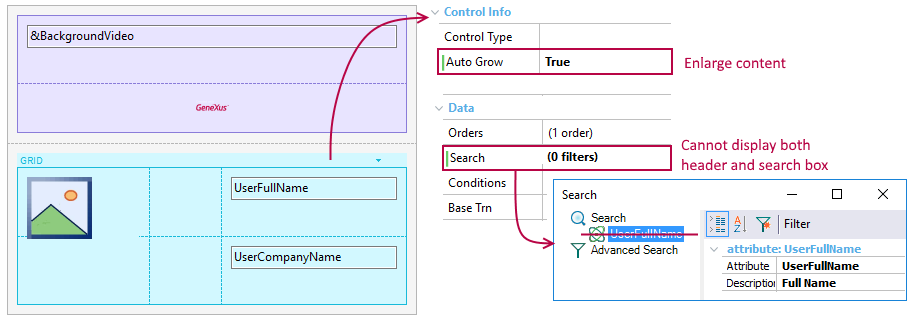
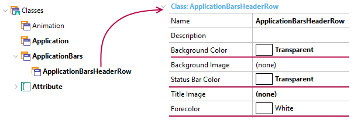
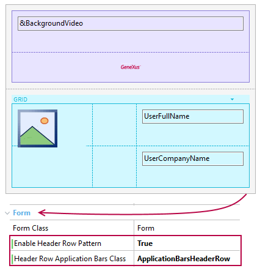

Enable Header Row Pattern property
Allows you to enable or disable a UI pattern called Header Row (a.k.a. Hero Image).
Values
| False | Default value. The pattern is disabled by default. This means that when you scroll down the screen, the Application Bar and Status Bar will always be visible |
| True | The pattern is enabled, unlocking Header Row Application Bars Class property which must be set with an Application Bar theme-class. This Theme-Class is used to change the appearance of the application bar when using this pattern. |
Description
This property is available for the MainTable in SD Panels and WWSD, under Form group.
Header Row pattern working as a visual introduction in the whole top of the screen. Initially, the first row of the layout reaches the space reserved for Application and Status Bars (in conjunction, System Bars) until the end-user scrolls up the content, in which case applies a smooth transition between the theme-class set on Class property and those set on Header Row Application Bars Class property. This first row is considered as a banner, which could be an image, a video, or whatever you want, and Header Row Application Bars Class property usually has every color with transparent value, giving the illusion that the banner appears and disappears when the end-user scrolls on the screen. Applications like Google Play uses it to shows a short demo video of the application when you see the description of it.
Technically, the MainTable covers all the device screen, including the space occupied by the application and status bar. Those two elements stay in a particular state (e.g. transparent, giving the illusion that is invisible; but can be other) until that the first row disappears from the upper reaches of the screen as a consequence of scrolling up by the end-user.
Run-time/Design-time
This property applies only at design-time.
Sample
Suppose you want to apply this UI/UX feature in the List section of WorkWithDevicesSpeaker object for displaying a banner above the speaker list.
For achieving that aim, you will have to design the following layout that includes a video and an image as a header (both embedded in a table in the first row).

After that, open the Theme object associated with the current layout (in this case, CarmineSD), select the ApplicationBars node, and note that there is a sub-class called ApplicationBarsHeaderRow. Set its properties as it is shown below in order to display the header until the end-user scrolls up the content (in which case, the system bars will appear).


The effect obtained in the application is shown below.
| Android | iOS |
 |
Notes
- For the pattern to take effect, it must be used in a scrollable screen (for example, with a grid). In this case, the grid must have the Autogrow property set.
- The first row of the Main Table must have a height greater than the Application Bar height to obtain the desired effect. Also, the Autogrow property must be set to True.
- In order to achieve a transparent effect, the ApplicationBarsHeaderRow class must satisfy two conditions:
1) Every color must be transparent (Background color, Status Bar color, and Forecolor)
2) Elevation property (on Android) must be 0 - not empty. - There are some limitations to the Autogrow property that must be taken into account to achieve the desired effect.
- When you use Navigation Style in Slide mode, this property indicates if the Slide menu uses the space of the status bar (true) or not (false).
- As of GeneXus 15 Upgrade 8 Layout Behavior properties group has been added in order to design apps for iPhone X. Consider using them when HERO pattern is applied because the default values for expanding the controls could not be appropriated in landscape mode.
Scope
Controls: Main Table control
Platforms:Native Mobile (Android,IOS)
Availability
This property is available as of GeneXus 15
See also